Languages
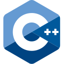
C++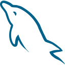
SQLBASED IN ALEXANDRIA, EGYPT
AI Developer, Python Developer, Computer Vision Engineer, and MCP / AI Agent Tooling.
Computer Science student focused on cybersecurity, building practical AI, computer vision, Python automation, and embedded systems projects.
01 — PROFILE
I am a Computer Science student on the Cybersecurity track at Pharos University in Alexandria. Outside coursework, I build and ship projects across YOLOv8 object detection, multithreaded Python automation, FastAPI backends, and ESP32-CAM prototypes.
My current focus is AI agent architectures and Model Context Protocol (MCP) tooling, especially how agents access external tools and APIs in practical developer workflows.
02 — TOOLKIT
A practical stack spanning machine learning, automation, APIs, and edge devices.

C++
SQL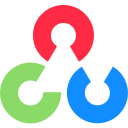
OpenCV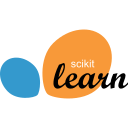
Machine LearningCVComputer VisionYYOLOv8AIAI AgentsMMCPPEPrompt Engineering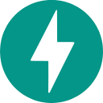
FastAPI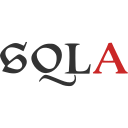
SQLAlchemyAPIREST APIsJWTJWT Authentication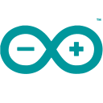
ArduinoESPESP32-CAMNETEmbedded Networking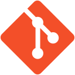
Git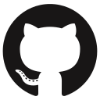
GitHub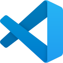
VS Code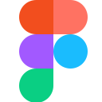
Figma03 — SELECTED WORK
Independent builds exploring how software, data, and devices work together.
A layered Python suite for web scraping, multi-source processing, and desktop GUIs. Concurrent extraction and export workflows keep the Tkinter interface responsive.
End-to-end YOLOv8 and OpenCV detection, from dataset preparation and annotation through training and validation. Compared accuracy and inference speed before automation integration.
A live video streaming and user authentication prototype integrating networking and AI-adjacent functionality within microcontroller memory, compute, and connectivity limits.
Studied MCP architecture for structured agent access to tools and APIs, plus multi-agent coordination trade-offs for developer tooling and code generation.
A desktop application for bulk image downloads from Pexels, with quality selection and a CustomTkinter interface.
A web dashboard and hardware control system connecting an ESP32-based humanoid robot with its camera, including operator access and live control.
Research and tooling for malware and network intrusion detectors, evaluating adversarial attacks and defensive hardening strategies.
04 — BACKGROUND
Formal study in computer science and focused training in visual design.
EDUCATION
Cybersecurity specialization
Pharos University in Alexandria
CERTIFICATION 2025
100 hours · Arabian Academy, Alexandria
Figma wireframes and interactive prototypes, user-centred design validation, a documented design system, and usability evaluation.
05 — GET IN TOUCH
Interested in AI agents, computer vision, automation, or cybersecurity? I would be glad to connect and talk through a project.
Email me